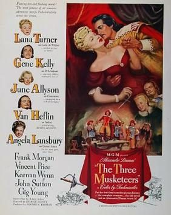
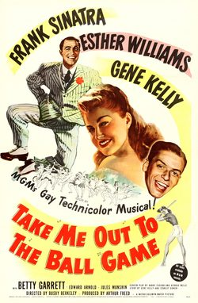
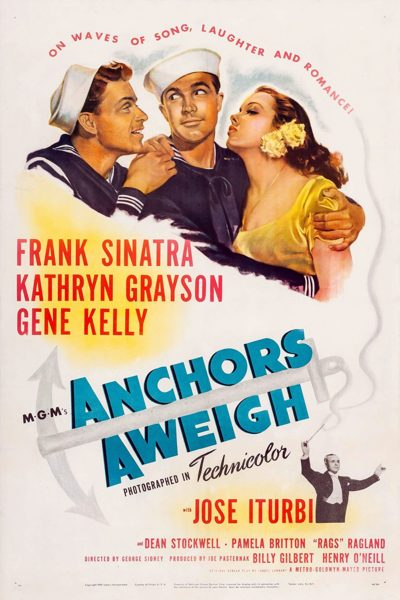
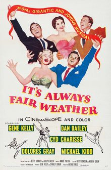
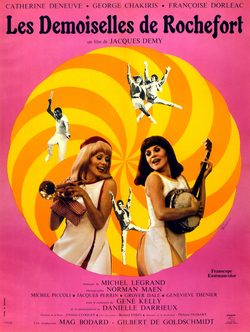

THE STANFORD THEATRE
Now Showing
·
Upcoming
·
Past
·
Search
October 26 - November 18, 2018
Gene Kelly Film Festival "Gotta Dance!"
7 bills
October 26 - 28
Brigadoon (1954)
108 min
Singin' in the Rain (1952)
103 min
October 31 - November 1

The Three Musketeers (1948)
125 min
The Pirate (1948)
102 min
November 2 - 4
On the Town (1949)
96 min

Take Me Out to the Ball Game (1949)
93 min
November 7 - 8

Anchors Aweigh (1945)
143 min
For Me and My Gal (1942)
104 min
November 9 - 11
Cover Girl (1944)
107 min
Les Girls (1957)
114 min
November 14 - 15

It's Always Fair Weather (1955)
102 min
Summer Stock (1950)
109 min
November 16 - 18

The Young Girls of Rochefort ( Les demoiselles de Rochefort ) (1967)
122 min
An American in Paris (1951)
108 min